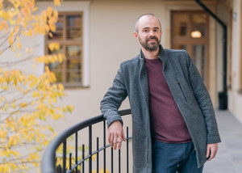
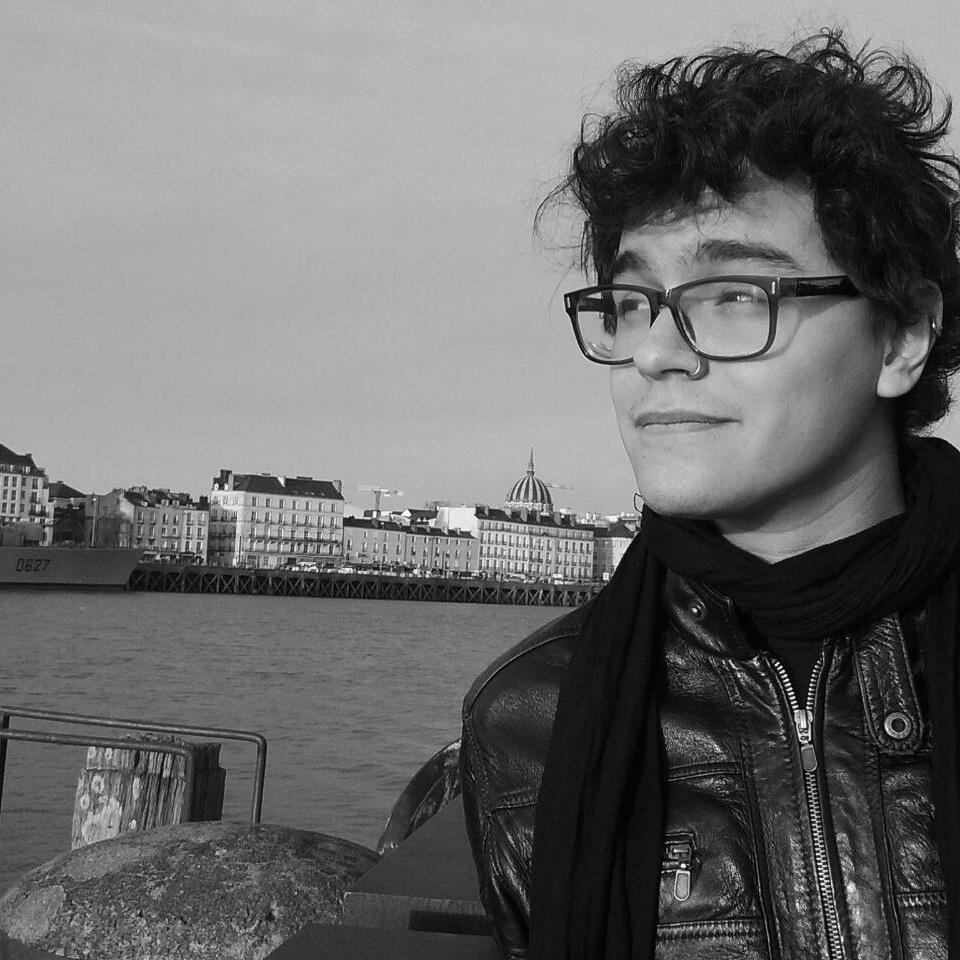
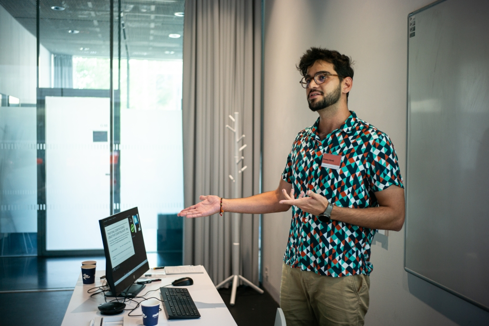
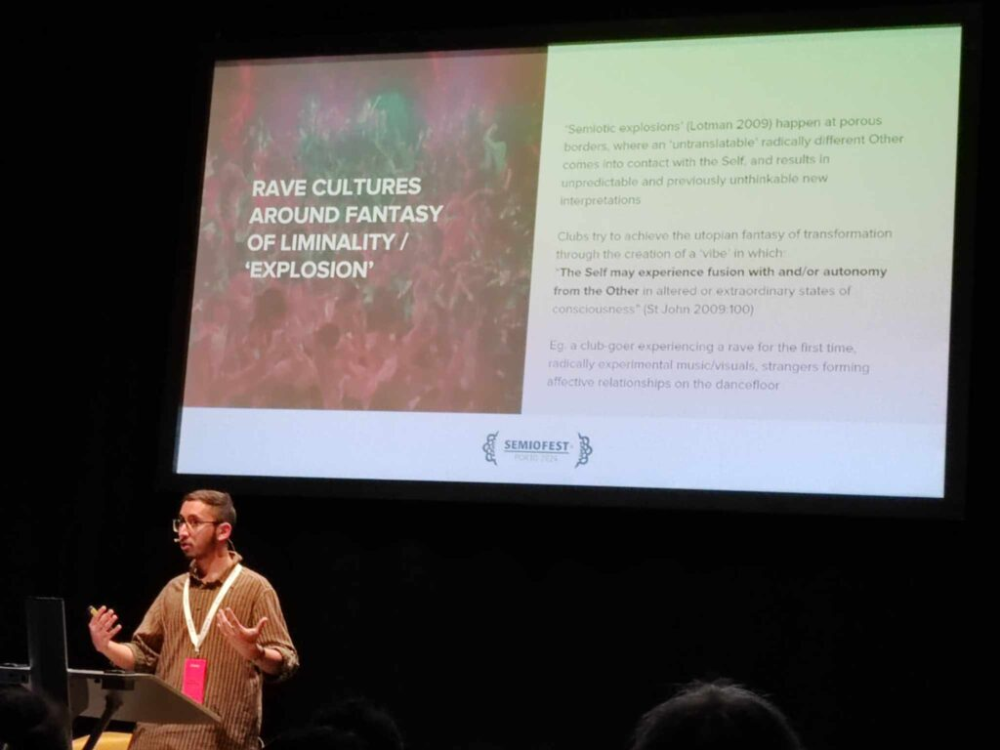
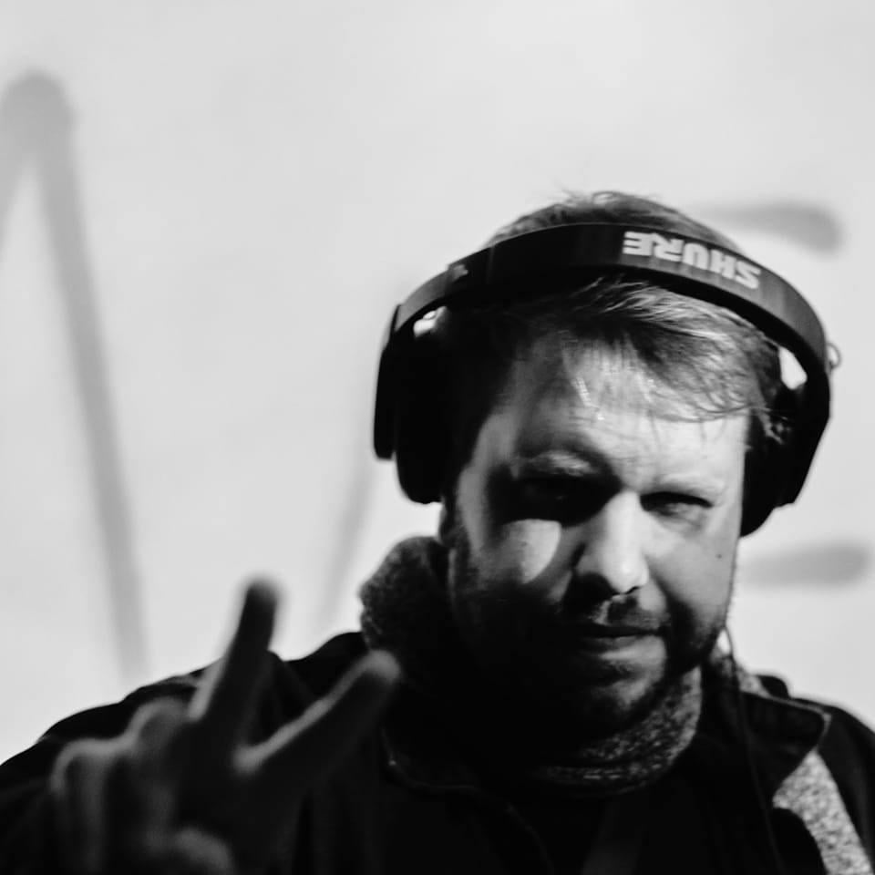

Staff Tyler James Bennett directortylerjames.bennett@upol.cz https://linktr.ee/tylerjbennett  Ľudmila Lacková Bennettvice directorludmila.lackova@upol.cz Eugenio Israel Chávez Barretochavezbarretoei@gmail.com  Mia Miriam Lévyová bartendermiamiriam.levyova01@upol.cz Kıvanς Gördü assistantkivanc.gordu01@upol.cz  J. Augustus Bacigalupi bacigalupiworks@gmail.compublications | university profile Lenka Pivoňková PhD studentlenkapivonkova@gmail.com Miriama Holická PhD studentmiriama.holicka01@upol.cz Barbora Jurková PhD studentbarbora.jurkova01@upol.cz Zdeněk Joukl PhD studentzdenek.joukl01@upol.cz Rahul MurdeswarIntern  Nick CavazosIntern  Elvīra AvotaIntern